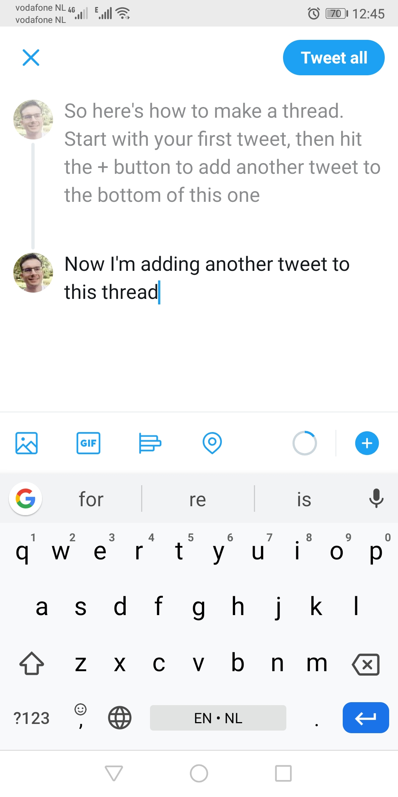

7 How threads work
Tweet threads are one of the little gems of this microblogging platform. A thread is a string of tweets all linked together by the author and will relate to a topic in some way. When composing a thread, usually people indicate this by starting it with [Thread] or 1/n or some other way to highlight it’s a thread.
Here’s how a thread shows up in you feed.
What keeps you from contributing to other ppl's (#rstats etc) open-source projects? #thread 1/5
— Benjamin Wolfe (@BenjaminWolfe) February 15, 2020
I have 3 fears:
1. What if my idea doesn't fit w/ the direction of the project?
2. What if my implementation doesn't match the project's design?
3. What if my style isn't on point?
To make a thread of your own, start by composing a tweet as usual, then tap the “+” icon in the lower right. This will add another tweet below it. When you’ve completed your thread, you can select “Tweet all” and the whole thread will be posted.

People can reply to any of the tweets in a thread which starts a mini offshoot thread. This can become a bit confusing if you want to see all replies to a thread, and we basically have to live with it until Twitter finds a way to make this more intuitive.